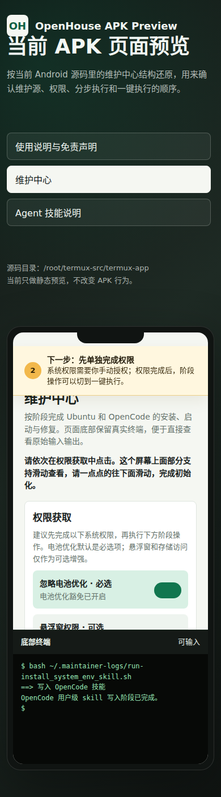

Termux 二次开发版 · 本地维护入口
OpenHouse App 使用说明
先拿系统权限，再选择 APK 内维护中心或本地网页维护器完成 Ubuntu、OpenCode、Codex、Claude Code 和 Agent skills 的安装配置。

入口位置
先进入 App 内的维护中心
主界面是 Termux 终端。右下角有两个悬浮按钮：下面的绿色按钮进入维护中心，上面的浅色按钮用于 OpenCode 快速启动。
安装 APK 后，从手机桌面或应用列表打开 OpenHouse。
按钮的无障碍名称是“打开维护中心”。它在 OpenCode 快速启动按钮的下方。
首次进入会先显示 OpenHouse 使用说明和免责声明，同意后自动进入维护中心。
在维护中心点击“启动并打开本地网页维护器”，浏览器会打开 127.0.0.1 的本机端口。
第一步
进入维护中心后按这个顺序走
- 完成权限获取 电池优化是关键权限；悬浮窗和存储按需要开启。权限开关只负责跳转授权，不会直接执行安装。
- 选择执行模式 新用户用“一键执行”；排障或重装某一段时用“分步执行”。选好后优先完成 OpenCode 阶段。
-
访问 OpenCode
OpenCode 启动后，在手机浏览器打开
http://127.0.0.1:4096/或http://localhost:4096/，先切换到更适合编码和配置工作的模型。 - 让 OpenCode 接手后续配置 在 OpenCode 里要求它读取 Agent skills，并按说明协助配置 Codex、Claude Code、第三方 API 和登录方式。
推荐操作
用 OpenCode 完成后续 AI 软件配置
维护中心负责把 OpenCode 跑起来。进入 OpenCode 后，先选择更适合编码和配置的模型，再把配置 Codex、Claude Code、第三方 API 的工作交给 OpenCode。
http://127.0.0.1:4096/
http://localhost:4096/
优先选择你账号里最强的编程或推理模型。如果不确定，让 OpenCode 先列出可用模型，并按质量、速度、成本给出推荐。
请先不要直接执行安装或修改配置。请按下面顺序帮我完成 OpenHouse 后续 AI 软件配置： 0. 先确认当前 OpenCode 使用的模型是否适合编码、排障和环境配置。如果当前模型偏弱，请引导我切换到当前账号可用的更强编程/推理模型；如果有多个选择，请按质量、速度、成本给出推荐。 1. 先阅读本机已有文档和 skills： - ~/product-docs - ~/.config/opencode/skills/system-environment-description/SKILL.md - ~/.config/opencode/skills/install-ai-agents/SKILL.md 2. 先检查当前环境，不要覆盖用户已有配置： - Termux home、Ubuntu proot、workspace、product-docs 路径 - OpenCode 当前端口和运行状态 - Codex 是否已安装、版本、登录状态 - Claude Code 是否已安装、版本、登录状态 - Node.js、npm、curl、git、ca-certificates 是否可用 3. 给出一个执行计划，把每一步分成“检查、安装、登录、第三方 API 配置、验证”。 4. 官方登录方式和第三方 API 配置都要分别说明。不要把 API key 写死进脚本，不要保存明文密钥到不必要的位置。 5. 需要执行命令时，先展示命令和影响，再等我确认。优先在 Ubuntu proot 中安装和配置 Codex、Claude Code。
核心流程
维护中心负责授权和调度，脚本负责实际安装
写入目录、更新基础包，确保 curl、proot-distro 和脚本环境可用。
AI 工具统一放进 Ubuntu proot，避免 Android 原生环境兼容问题。
执行到 OpenCode 阶段后，访问 127.0.0.1:4096，让 OpenCode 作为后续配置助手。
让 OpenCode 按内置 skill 帮你完成 Codex、Claude Code 和第三方 API 配置。
本地网页维护器
浏览器里的维护面板
网页维护器运行在手机本机 `127.0.0.1`，通过白名单 API 执行安装、设置和日志动作。它不是远程网站，也不会默认暴露到局域网。
38423
10000-65535
http://127.0.0.1:<端口>/
打开
在维护中心点击“启动并打开本地网页维护器”。App 会先启动本地服务，再打开浏览器。
关闭
点击“关闭本地网页维护器”。关闭后端口不再监听，浏览器刷新会显示无法访问。
换端口
点击“修改本地维护器端口”，保存后再次启动；运行中的服务会自动重启到新端口。

AI Agent
先启动 OpenCode，再配置 Codex 和 Claude Code
- OpenCode默认访问
http://127.0.0.1:4096/，启动后作为用户的本地配置助手。 - Codex安装到 Ubuntu proot；让 OpenCode 按 skill 检查登录方式、环境变量和第三方 API 配置。
- Claude Code提供官方登录方法和第三方 API 示例，由 OpenCode 引导用户自行填写密钥。
- Agent skills写入系统环境说明、安装配置说明、路径和端口约定。
插件源
更新维护内容不用重装 APK
维护中心支持三套插件源：APK 内置源、本地用户源、GitHub 在线源。在线源更新后，App 刷新维护源即可看到新的阶段流程、阶段说明和动态按钮。
- APK 内置源
- 随 APK 打包，适合离线兜底。
- 本地用户源
- 放在 Termux home，可由用户自己修改。
- GitHub 在线源
- 默认来自固定 raw 地址，适合快速发布新阶段。
排障
常见问题
打开网页维护器显示空白或无法访问
先确认维护中心里已经点击“启动并打开本地网页维护器”。如果改过端口，浏览器地址也要换成当前端口。
端口被占用
把本地维护器端口改到另一个 5 位端口，例如 38424，再重新启动。
下载脚本失败
先执行“更新 Termux 软件包”，确保 curl 和证书可用；再刷新维护源。
不想直接进入 Ubuntu
在“启动入口设置”里选择“打开 Termux 后停留 Termux”。需要自动进入 Ubuntu 时再切回去。